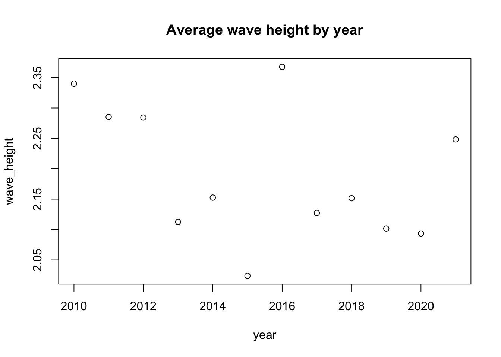
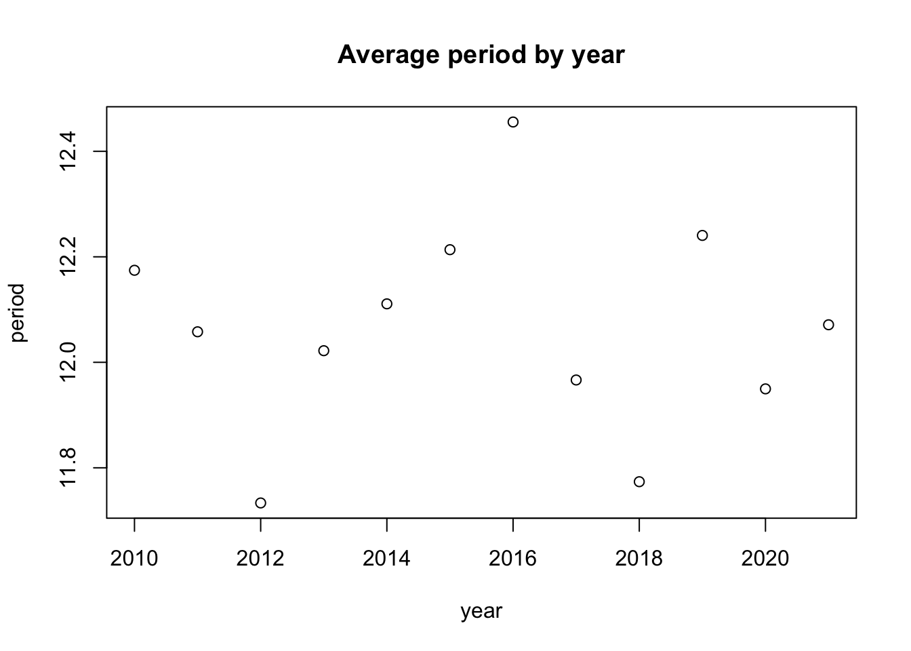
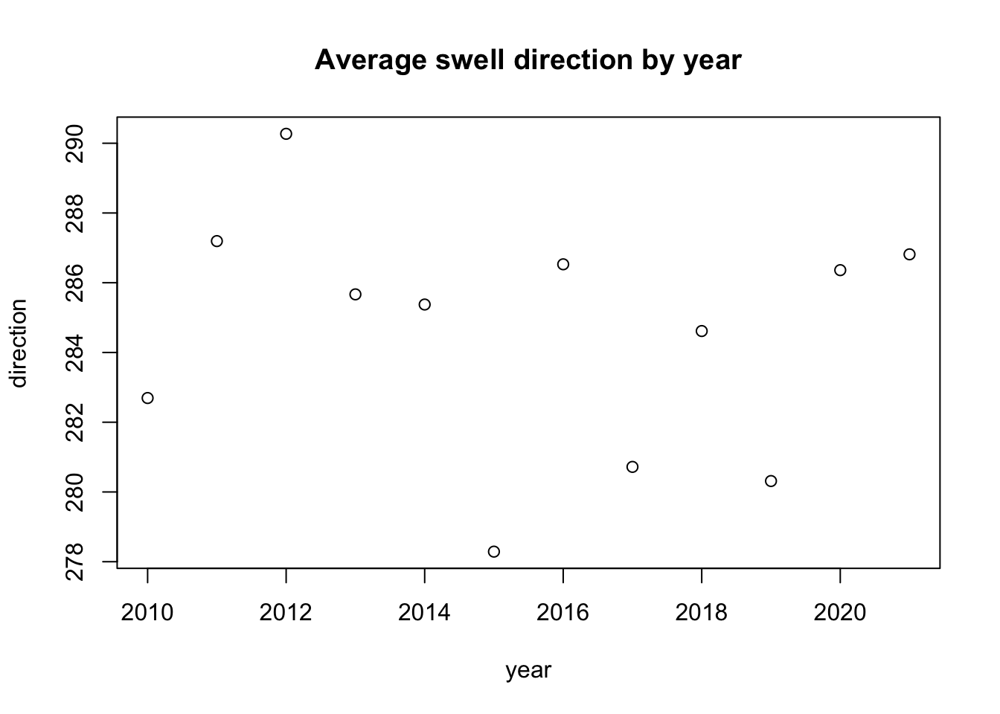
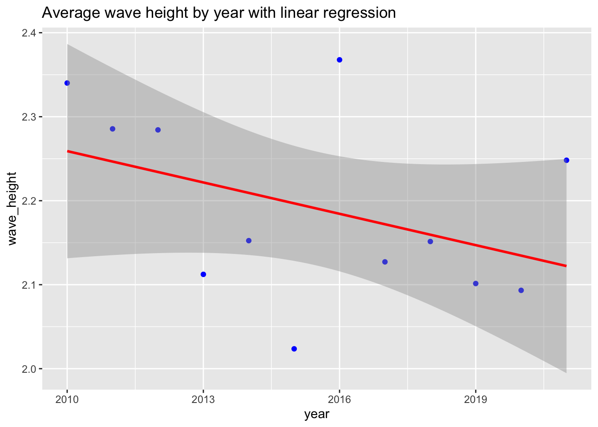
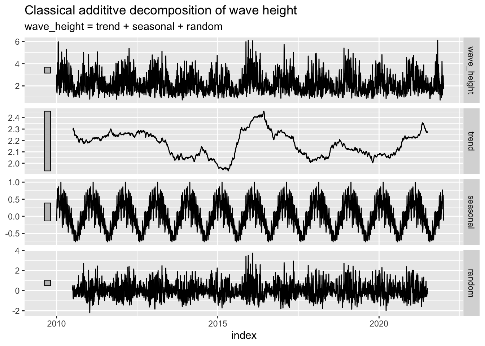
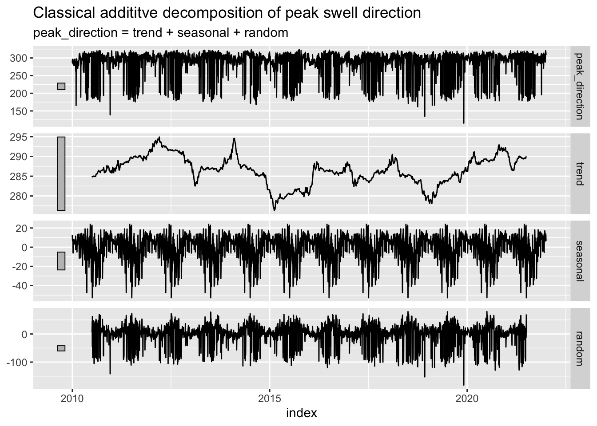
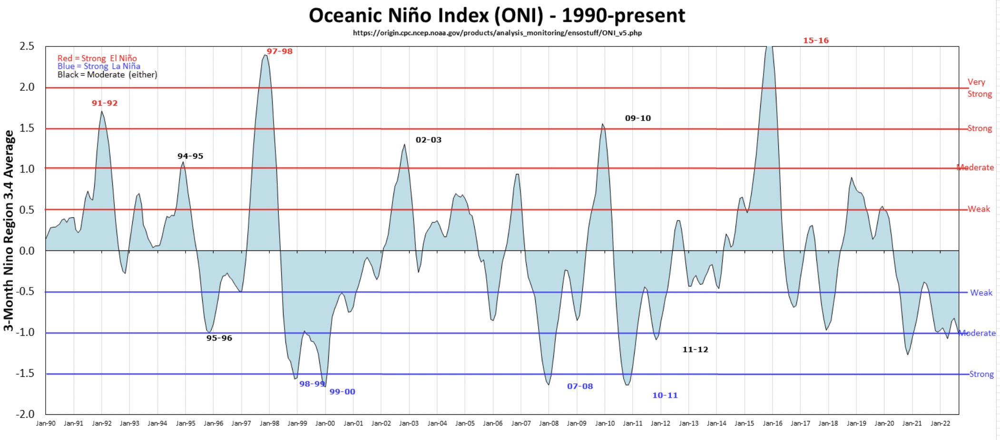

Statistical Time-series Analysis of Data from Harvest Buoy
“Can we use buoy data to determine whether or not there are long run trends in wave height, period, and direction? What role does the El Niño Southern Oscillation (ENSO) have in determining patterns in these variables?”
Master of Environmental Data Science Program @ UCSB
Published
December 1, 2022
Background
Living in Santa Barbara can be tricky from a surfer’s perspective. When I moved here from San Diego, I learned that it takes far more diligence and knowledge of reading meteorological data in order to score some fun waves here. If you really know what you’re doing, you can even get some great spots all to yourself some days.
Lately, I have been hearing from the older locals that we have had the worst three winters in a row that they can remember. As I learned more about climate change in my undergraduate career alongside my own surfing research, I began to wonder if there’s a connection between climate change and surfing opportunities. Is this all in our heads as frustrated SB surfers? Could the increasing variability of storms due to climate change affect the surf in Santa Barbara?
This short blog post will focus on wave prevalence and attributes over time due to patterns in storm activity. I would like to find out whether there has been a trend or pattern in surf availability based on time series buoy data using classical decomposition. If possible, I would also like to link this to the ENSO cycles.
Motivation
Most, if not all adventure sports are being somewhat impacted by climate change due to their dependency on wind, rainfall, temperature, swell, snowmelt, and other climate variables. We have already seen effects of increased climate variability on the adventure tourism industry, specifically in snow sports. (Buckley, 2017). But how does climate change relate to surfing? Rising sea level paired with anthropogenic variables such as coastal development and depleted sand banks (from upstream hydroelectric dams) combine to exacerbate coastal erosion and ultimately contribute to the altering of underwater bathymetry that creates the waves that we salty people depend on (Arroyo, 2019). Many surfing locations all over California have been both tragically lost and accidentally created at the hand of human activity.
Within the realm of surf frequency and quality, a key predictor of any given year’s surfing potential in California is the El Nino Southern Oscillation (ENSO) status. During El Nino years, the storm track over the North Pacific is usually enhanced, and we see high quality surf travel from straight West through the Santa Barbara Channel. During strong events, California sees especially significant surf. During La Nina, blocking high pressure over the pacific during winter typically limits tropical swells in the eastern pacific, and shifts the storm track to the North, causing many swells to miss the Santa Barbara Channel (Surfline, 2020).
This winter (2022-23), there is a 76 percent chance that we will be experiencing our third La Nina even in a row, which is relatively rare (Johnson, 2022). Climate change is causing some strange anomalies in the ENSO cycle. According to National Oceanic and Atmospheric Association (NOAA) researcher Michael McPhaden, “Extreme El Niño and La Niña events may increase in frequency from about one every 20 years to one every 10 years by the end of the 21st century under aggressive greenhouse gas emission scenarios.” (research.noaa.gov). The last extreme ENSO event that we have had was the winter of 2015-2016, when a brutal stream of storms battered the Santa Barbara coastline, causing considerable damage, and amazing surf.
About the data
I used data from the buoy that I look at every day, that guides all my surf decision making, the Harvest Buoy off Point Conception. It is owned by the Scripps Institute of Oceanography and its data is distributed by NOAA. This buoy has been up and running since 2004, but the data has a few large gaps (I think because of maintenance or malfunction reasons) up until 2010. From 2010 onward, there are two observations every single hour of every day until this moment. The measurements that I am interested in are wave height, dominant wave period - basically wavelength, average wave period, and swell direction.
There are seemingly many ways to retrieve this data, but the one that I was able to get to work was through this link:
It was extremely difficult to make sense of this data because it came in the form of a .txt file that tried to make use of spaces in order to form columns. All the functions I tried to use to read it in as a csv file were getting all the columns mismatched and jumbled up... until I found the read.table() function. With this function I still had to do some renaming and matching of the columns but it left the data intact.
I ended up with this dataframe below which has observations of wave height, dominant period, average period, peak swell direction, and temperature. The variables that I felt were relevant to this project were wave height, swell direction, and dominant period.
To create a quick visualization of what these variables look like, I calculated the mean of each one per year and made these very simple plots:
Show Code
#--- compare yearly mean wave height yearly_mean_wvht <- waves_clean |>group_by(year) |>summarize(wave_height =mean(wave_height)) #plot(yearly_mean_wvht) #--- compare yearly mean dominant periodyearly_mean_dom_period <- waves_clean |>group_by(year) |>summarize(period =mean(dom_period))#plot(yearly_mean_dom_period) #--- compare yearly mean swell directionyearly_mean_direction <- waves_clean |>group_by(year) |>summarize(direction =mean(peak_direction))#plot(yearly_mean_direction) #--- Plot the three variables in a 1x3 rowplot(yearly_mean_wvht, main ="Average wave height by year")

Show Code
plot(yearly_mean_dom_period, main ="Average period by year")

Show Code
plot(yearly_mean_direction, main ="Average swell direction by year")

If you add a linear regression line to the wave height variable across years, you get this slightly concerning downward trend line. What could this mean? We know there are many factors playing a role in the distribution of wave height year to year, specifically seasonality and the El Nino Southern Oscillation cycles. To explore this relationship further, I would like to isolate seasonality and extract a long-run trend from this time series data using classical additive decomposition.
Show Code
#--- add an lm trend line to our wave height averages plot using ggplotggplot(data = yearly_mean_wvht, aes(x = year, y = wave_height)) +geom_point(col ="blue") +geom_smooth(method = lm, col ="red") +labs(title ="Average wave height by year with linear regression")

Decomposition
The North Pacific come to life in wintertime, and goes back to sleep in the summer… for the most part. When dealing with very seasonal data like this it can be useful to create a classical additive decomposition model. This model will decompose the data into seasonal, random, and trend components like this: \[y_t = S_t + T_t + R_t\] After we have separated these components we can plot them to compare which significantly impact our data. To do this, I had to create a unique daily index for the time series tibble that I could use for the model. I did this by calculating the average of our variables by day. Next, I used the lubridate::ISOdate() function to consolidate our time variables into a usable date index for our time series. After converting this intermediate dataframe into a tsibble object, I had to fill some gaps in time by using tsibble::fill_gaps() and tidyr::fill(). After feeding this through our decomposition model, you can see plots generated below for our variables of interest.
Show Code
#--- Add in ISOdate column to use in tsibble indexwaves_clean$dt <-ISOdate( waves_clean$year, waves_clean$month, waves_clean$day, waves_clean$hour, waves_clean$minute,0) |>na.omit()#--- Convert to time series tibblewave_ts =as_tsibble(waves_clean, index="dt") #--- Create a regular fixed-interval time series by aggregating daily wave# height as the mean height for each day. Also, some days were missing,# could be due to wrong days in a month, like Feb, so using fill_gaps() to# add any needed rows and fill() to use prior measurement for the gaps.wave_regular = wave_ts %>%index_by(index =~as_date(.)) %>%summarise(wave_height =median(wave_height),dom_period =median(dom_period),av_period =median(av_period),peak_direction =median(peak_direction), temp =median(temp) ) %>%fill_gaps() %>% tidyr::fill(wave_height, .direction ="down") %>% tidyr::fill(dom_period, .direction ="down") %>% tidyr::fill(av_period, .direction ="down") %>% tidyr::fill(peak_direction, .direction ="down") %>% tidyr::fill(temp, .direction ="down")# Now, we have a "regular" fixed-interval tsibble with median measurements per day, with column 'index'#--- Classical addititve decomposition of wave heightwave_regular %>%model(classical_decomposition(wave_height ~season("1 year"), type ="additive")) %>%components() %>%autoplot() +labs(title ="Classical addititve decomposition of wave height")

Show Code
#--- Classical addititve decomposition of dominant wave periodwave_regular %>%model(classical_decomposition(dom_period ~season("1 year"), type='additive')) %>%components() %>%autoplot() +labs(title ="Classical addititve decomposition of dominant period")
Show Code
#--- Classical addititve decomposition of average wave periodwave_regular %>%model(classical_decomposition(av_period ~season("1 year"), type='additive')) %>%components() %>%autoplot() +labs(title ="Classical addititve decomposition of average period")
Show Code
#--- Classical addititve decomposition of peak swell directionwave_regular %>%model(classical_decomposition(peak_direction ~season("1 year"), type='additive')) %>%components() %>%autoplot() +labs(title ="Classical addititve decomposition of peak swell direction")

Decomposition Analysis
As you can tell looking at these decomposition plots, there’s no way to make out a definitive trend in any of the variables, whether they are going up or down over time. Additionally, this is a very short time period in the grand scheme of climate change over time since the industrial revolution. Perhaps we could visualize more meaningful relationships over time if these measurements had taken place since the 1940s or so.
However, we do see an interesting spike in wave height and period during a time period around 2016. We also see a sharp drop in swell direction to about an average of 280 degrees. These conditions are all very favorable to surfing in Santa Barbara. This time period around 2016 also aligns with the very strong El Nino event that took place that year. Here is a useful graphic of El Nino oscillations over our time period of interest (Null, 2022).
Show Code
knitr::include_graphics("images/enso_graph.png")

Another Question
Since we see the variables changing during this El Nino event, I would like to compare our wave height, period, and direction during a strong El Nino event with that of a strong La Nina event. Since there is only one of each happening within the 2010-2021 period that we have buoy data for, I will compare the 2010-11 La Nina event (June 1, 2010 - May 31, 2011) with the 2015-16 El Nino event (April 1, 2015 - March 31, 2016).
First, I’ll subset our time series dataframe into just those time periods, with an added enso column that will either say “el_nino” or “la_nina”. Then I will be able to use the stats::t.test() function to determine whether the difference in means of our variables of interest differ statistically between strong El Nino and La Nina events.
Show Code
#--- create la nina filter: june 1, 2010- may 31 2011 and create an enso column that says that it was la ninala_nina <- wave_regular |>filter(between(index, as.Date("2010-06-01"), as.Date("2011-05-31"))) la_nina$enso <-"la_nina"#--- create el nino filter: june 1, 2010- may 31 2011 and create an enso column that says that it was el ninoel_nino <- wave_regular |>filter(between(index, as.Date("2015-04-01"), as.Date("2016-03-31"))) el_nino$enso <-"el_nino"#--- visualize the means of our variables comparison_chart <-data.frame(enso =c(" 2010-11 la nina", "2015-16 el nino"), mean_height =c(mean(la_nina$wave_height), mean(el_nino$wave_height)),mean_period =c(mean(la_nina$dom_period), mean(el_nino$dom_period)),mean_direction =c(mean(la_nina$peak_direction),mean(el_nino$peak_direction)))comparison_chart
enso mean_height mean_period mean_direction
1 2010-11 la nina 2.203219 11.87426 287.4562
2 2015-16 el nino 2.309850 12.49772 281.9139
Show Code
#--- join these dataframes together to run t-testcomparison_df <-bind_rows(la_nina, el_nino)#--- run t-test to see if enso status really affects our variables#--- WAVE HEIGHTt.test(wave_height~enso, data = comparison_df)
Welch Two Sample t-test
data: wave_height by enso
t = 1.6275, df = 673.93, p-value = 0.1041
alternative hypothesis: true difference in means between group el_nino and group la_nina is not equal to 0
95 percent confidence interval:
-0.02201407 0.23527517
sample estimates:
mean in group el_nino mean in group la_nina
2.309850 2.203219
Show Code
#--- PERIODt.test(dom_period~enso, data = comparison_df)
Welch Two Sample t-test
data: dom_period by enso
t = 3.0192, df = 720.98, p-value = 0.002624
alternative hypothesis: true difference in means between group el_nino and group la_nina is not equal to 0
95 percent confidence interval:
0.2180466 1.0288700
sample estimates:
mean in group el_nino mean in group la_nina
12.49772 11.87426
Show Code
#--- DIRECTIONt.test(peak_direction~enso, data = comparison_df)
Welch Two Sample t-test
data: peak_direction by enso
t = -1.9964, df = 728.15, p-value = 0.04627
alternative hypothesis: true difference in means between group el_nino and group la_nina is not equal to 0
95 percent confidence interval:
-10.99248229 -0.09197763
sample estimates:
mean in group el_nino mean in group la_nina
281.9139 287.4562
Discussion
It is interesting to see that with a significance value of alpha = 0.05, the difference in wave height was not statistically significant (but still close). However, the mean period was significantly smaller for the La Nina period than the El Nino, AND the mean swell direction was significantly steeper during the La Nina event as well. This lends support to the observation that El Nino years have bigger waves, longer periods, and a better swell angle (closer to 270 degrees) than La Nina years.
However, this is still relatively inconclusive, because no two ENSO cycles are exactly alike and we only have one of each here to compare. It is likely that different ENSO events have slightly different qualities and it would be irresponsible to generalize that just from comparing two of them we have uncovered some absolute truths. Nonetheless, comparing these two events did line up with what I outlined in the “motivation” section above. Due to the altering of the pacific storm track during an El Nino event, we see more waves coming straight into the SB channel without having to wrap around Point Conception to the North.
References
Arroyo, M., Levine, A., & Espejel, I. (2019). A transdisciplinary framework proposal for surf break conservation and management: Bahía de Todos Santos World Surfing Reserve. Ocean & Coastal Management, 168, 197–211. https://doi.org/10.1016/j.ocecoaman.2018.10.022
Buckley, R. (2017). Perceived Resource Quality as a Framework to Analyze Impacts of Climate Change on Adventure Tourism: Snow, Surf, Wind, and Whitewater. Tourism Review International, 21(3), 241–254. https://doi.org/10.3727/154427217X15022104437729
El Nino, La Nina, ENSO and What They Mean to Your Surf. (2020, April 17). Surfline. https://www.surfline.com/surf-news/el-nino-la-nina-enso-what-they-mean-to-your-surf/82991
Goldman, S. (2017, March 1). Storms, Powerful Waves Have Eaten Away Santa Barbara County Coastlines to Historic Levels. https://www.noozhawk.com/article/storms_waves_coastal_erosion_santa_barbara_county_historic_levels
How will climate change change El Niño and La Niña? - Welcome to NOAA Research. (2020, November 9). How Will Climate Change Change El Niño and La Niña? https://research.noaa.gov/article/ArtMID/587/ArticleID/2685/New-research-volume-explores-future-of-ENSO-under-influence-of-climate-change
Johnson, N. (2022, November 22). Another winter in La Niña’s grip? – November update to NOAA’s 2022-23 Winter Outlook | NOAA Climate.gov. http://www.climate.gov/news-features/blogs/another-winter-la-ni%C3%B1a%E2%80%99s-grip-%E2%80%93-november-update-noaas-2022-23-winter-outlook
Null, J. (2022, October 1). El Niño and La Niña Years and Intensities. https://ggweather.com/enso/oni.htm